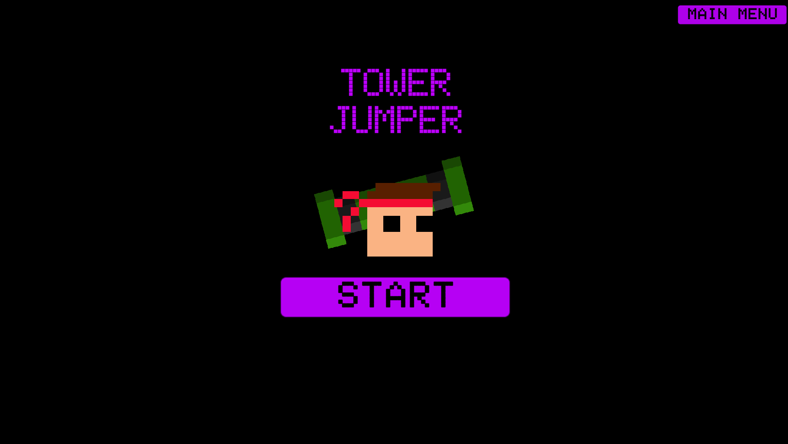
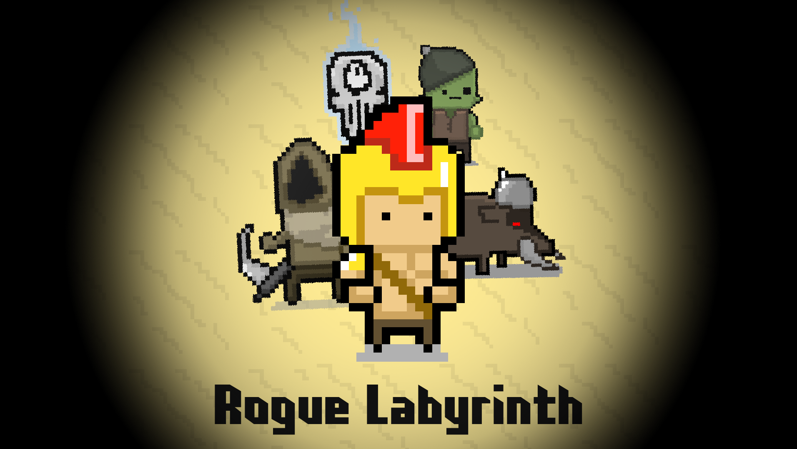
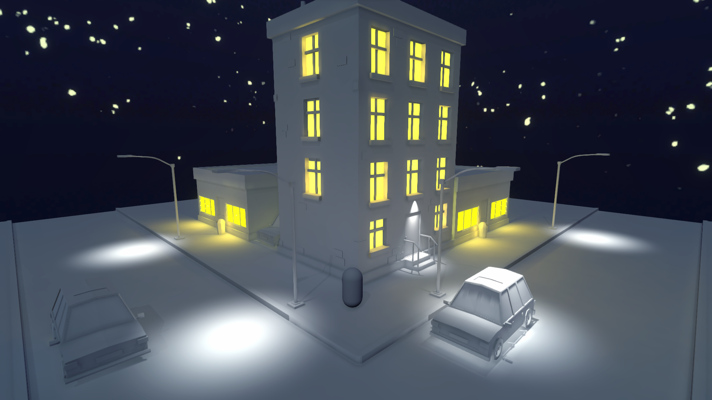

PIXEL PLAGUE
Pixel plague is a wave based horde shoot em up created for my Intro to Game Programming course at RPI.
Using a minigun, the player guns down hordes of zombies, racking up points. This is achieved through a wave manager script that
controls the frequency and quantity of enemies. Powerups drop between waves to keep increasing the strength of the player. Unity's particle
system generator played a large role in the effects of the minigun fire. This coupled with screen shake and some minor lighting
tweaks made the final product.
TOWER JUMPER

Tower Jumper is a rocket jumping platformer also created for my Intro to Game Programming course.
The player wields a bazooka and is able to propel themselves by firing rockets at nearby surfaces. Consistent
phyiscs checks ensure smooth and consistent rocket jumping. Raycasting plays a large part in this project, from
identifying platoform edges in enemy patrolling scripts to turret scripts seeing the player and opening fire.
At the top of the level resides a goal to be reached after some increasingly difficult platforming.
ROGUE LABYRINTH

Rogue Labyrinth was a project I worked on with a few friends in high school. I handled all the programming and unity implementation,
while one of my buddies drew up and animated the sprites and the other worked on the music. The game is a rogue-like dungeon crawler
in which the player clears a randomly generated level, picking up powerups and defeating enemeis while working their way towards the
boss. The random level generation is a modular system which allows for new rooms to be added and worked into the levels.
LIGHTING PRACTICE

This was a simple scene given to me as a part of my Art for Interactive Media course at RPI. The task was to add a skybox and add
lighting based on a prompt. Mine was frigid yet comforting. I tried to represent this through the use of warm yellow lighting,
while also utilizing a slight blue tint. My goal was to contrast the comforting aura of the buildings with the cold
atmosphere of the night. This project was my first real experience with lighting in Unity and served as an introduction
to the Universal Render Pipeline.